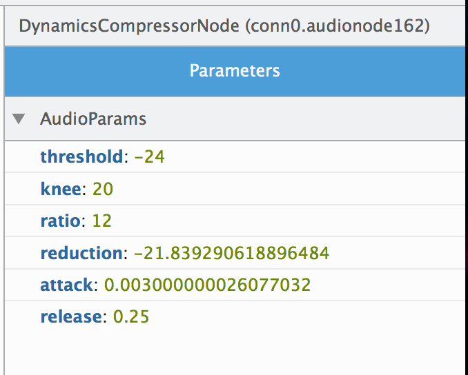

除了「著色器編輯器 (Shader Editor)」與「Canvas 除錯器 (Canvas Debugger)」之外，從 Firefox 32 開始，更有「Web Audio 編輯器 (Web Audio Editor)」可針對網頁的多媒體內容進行除錯。若是使用 Web Audio API 開發 HTML5 遊戲或有趣的合成器 (Synthesizer)，就能讓 Web Audio 編輯器透過 Web Audio AudioContext，呈現並修改所有的音訊節點。

將 Audio Context 視覺化
當以 Web Audio API 的模組化路由 (Modular routing) 進行開發時，光是聆聽音訊輸出很難解析音訊節點的連結方式。此外，只是聆聽輸出，或觀看音訊節點的程式碼，也難以對 AudioContext 進行除錯。但 Web Audio 編輯器可透過有向圖 (Directed graph) 描繪所有 AudioNodes，並展示所有音訊節點的階層與連結。讓開發者能確認所有節點均照著自己期望的方式完成連結。如果遇到複雜網頁 (例如用一個節點網路專門操作音訊，又用另一個節點網路分析資料) 時，這個功能就特別有用。我們已經看過能構成這些圖像的 Web Audio 酷炫應用！
{kind=link}
如果要啟動 Web Audio 編輯器，可開啟開發者工具中的「工具箱選項」(即齒輪圖示) 並勾選「Web Audio Editor」。在啟動編輯器之後，就會開啟工具並重新載入頁 面，由工具監控所有的 Web Audio activity。只要建立新的音訊節點，或節點之間發生連線/中斷，圖表也將更新為最新內容。
修改 AudioNode 屬性
在描繪圖表之後，即可分別檢測音訊節點。只要點擊圖表上的 AudioNode 隨即開啟 AudioNode 檢測器，即可檢視並修改節點上的 AudioParam 與特定屬性。

未來開發重點
這是 Web Audio 編輯器首次現身，我們將為音訊開發者繼續強化此工具。
- 顯示節點的視覺反饋效果，並可呈現時域/頻域
- 可透過編輯器進一步建立、連接、中斷音訊節點
- 可用於 onaudioprocess 活動與音訊突波 (glitch) 的除錯 工具
- 顯示額外的 AudioContext 資訊，可支援多個 AudioContext
- 將來不僅能修改節點檢測器中的參數 (Primitive)，例如亦可新增 AudioBuffer
我們還規劃了許多絕佳功能， 你可檢視 Web Audio 編輯器所開放的錯誤， 或提報新的錯誤。另請參閱 Web Audio 編輯器的 MDN 說明文件；我們也歡迎 UserVoice feedback channel 上提出任何意見與想法，你當然 也能使用 Twitter @firefoxdevtools。
原文連結：Introducing the Web Audio Editor in Firefox Developer Tools